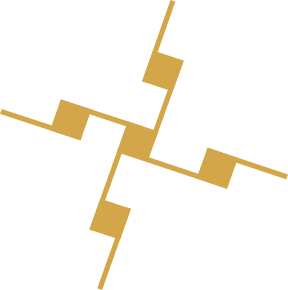

Modern Gaulish · Neogallic
Galatac is the ancient Gaulish language, reborn for modern speakers. It is, at once, one of the oldest tongues of Europe and one of the newest. A language carried forward two millennia, and a language only just learning to speak again.
Today's Celtic languages survive only in small, endangered communities along the Atlantic edge. But the Celtic languages once held the whole of West and Central Europe, from Iberia to Anatolia. Galatac restores the missing centre.
If you already speak a Celtic language, you'll spot plenty that feels familiar. If you speak Germanic or Romance, you'll recognise scattered words here and there. Fragments of an older inheritance you didn't know you had. Perhaps this is what Europe has been missing: an auxiliary tongue that belongs to none of us and to all of us, equally foreign and equally familiar, rooted not in compromise but in our own buried history.
Galatac is a sister branch of the family. A sister who's been missing for a thousand years. Her belongings strewn about the house. You had forgotten her, but she is now standing in the doorway.
Word order : Verb-Subject-Object. Ex. : Gena si gnatal.
Nouns : Oftem -a bat bu sempre. Ex. : jiva, dwar, fish.
Adjectives : Often -ac / -ic / -in / -id . Ex. : forte, sekret-ney
Adverbs : Often inte + [adj]. Ex. : inte nowi (newly).
Verbs : Verb roots can end on -n, -r, -l, -m, -s, -g, -e, -i, -a, and one single verb on -o. Ex. : men, reti, anwi, gwei, cara.
Present tense : Add or swap -a. Ex. : mena, reta, anwia, gweia, cara .
Present Perfect : [verb root]-tu. Ex. : mentu, retitu, anwitu, gweitu, caratu.
Past tense re + [verb root]. Ex. : re men, re reti, re anwi, re gwei, re cara.
Past Perfect : re + [verb root]-tu. Ex. : re mentu, re retitu, re anwitu, re gweitu, re caratu.
Future tense : [verb root]-si. Ex. : mensi, retisi, anwisi, gweisi, carasi
Conditional mood : re + [verb root]-si. Ex. : re mensi, re retisi, re anwisi, re gweisi, re carasi.
Past Participle : -tu.
Diminutive : -al. Feminine : -is. Plural : -e.
Definite article in. Adjectives invariable.
Personal Pronouns : Mi, ti, (e, si, i) ; Plural : Ni, swi, si.
0% <---------------------------------> 100% nul < on < meiu < nep < elu < imbet < ol
|------------------------- nep -------------------------|
nil -|------------------- nep -------------------|- ol
|- sin 👇 -|
0% <----------------------------------------------> 100%
👇🏠 👉 🏠 insin inse
👉🧍 👉 🧍 sin don se don
etara etanel gwer teie
✈️
seda etan
gwer teie
sta gwir 🐦 sta pren
arpen tut teie 🧍♂️ 🏠🏡🏠 🌳 arpen desi teie
🐛🐛
biwiti tarace gwo teie
🐕 🏃♀️ 🐈 anela cun seda cat ar in ben eren in ben
🌼🌼🌼 🌳👶🌼 🍼 🌼🌼🌼 esi blatue esi paral er gnatal au gnatal Esi pren arpen gnatal